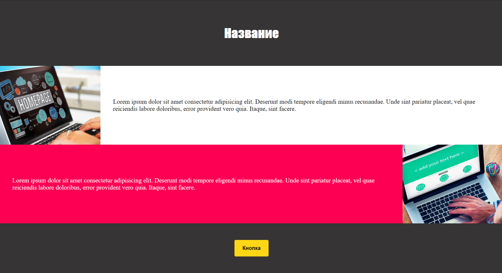

1
Сайт по макету
сложнов VS Code
Сверстай сайт по картинке, используя всё, что изучили: теги, стили, отступы, flexbox и :hover. Сравни свой результат с ответом только после того, как закончишь.

🖥️ Это большое задание — делай его в VS Code на компьютере и открывай страницу в браузере. Не забудь выложить результат на свой сайт на GitHub!